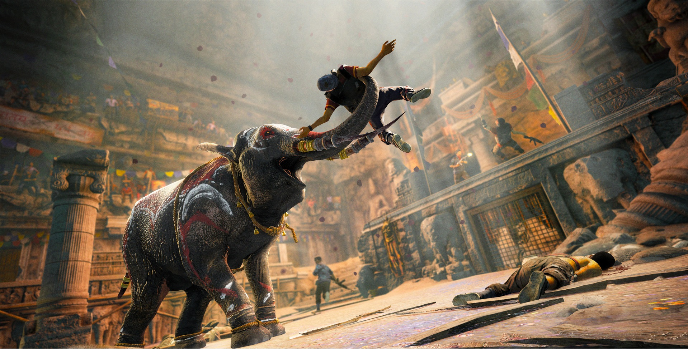
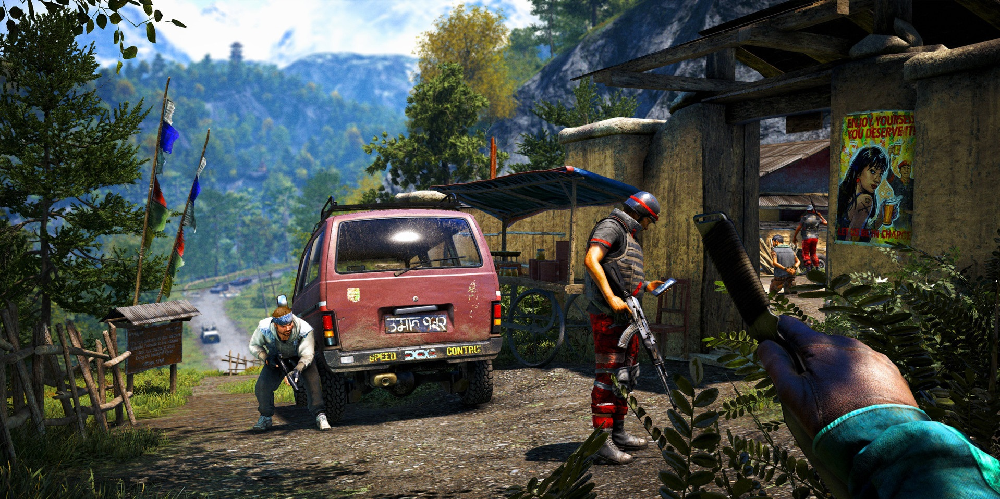
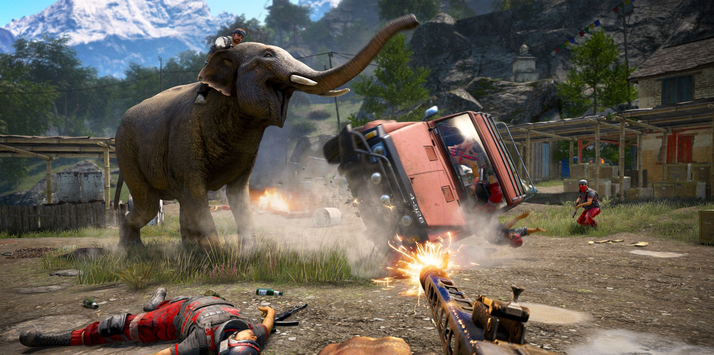

Far Cry 4
Far Cry 4 is one of Ubisoft's upcoming games. The game is set for release on November 18, 2014 in North America and November 20, 2014 in Europe for the Xbox One, Xbox 360, PlayStation 4, PlayStation 3, and PC. Pre-orders will include a “free upgrade to the Limited Edition which includes Hurk’s Redemption, a series of three action-packed single-player missions featuring the popular character Hurk from Far Cry 3’s DLC. The Limited Edition also includes signature harpoon gun called 'The Impaler'." Another pre-order bonus announced, the Kyrat Edition, which includes a map of Kyrat, Propaganda Poster, a journal, an exclusive case, a 20cm Pagan Min statue and the map of Kyrat.
Far Cry 4 is set in the Himalayas, a mountainous region of Nepal and follows the story of Ajay Ghale, a native of Nepal that returns to his home country of Kyrat, one of the more remote regions of the Himalayan mountain range. When he arrives, he finds that the area is under the tyrannical rule of the self appointed king, Pagan Min. Ajay is only there to scatter his recently deceased mothers ashes but somehow becomes embroiled in the civil war that is raging. Despite not having much information, it would seem Pagan Min recognises Ajay by his eyes, perhaps pointing to a hitherto unknown relation.
Far Cry 4‘s narrative director Mark Thompson expressed that he wanted the narrative of the game to correct shortcomings he felt the previous game Far Cry 3 had. In Far Cry 3, the open world nature of the gameplay was at odds with the plot as it allowed the player to perform protracted acts of exploration despite situations in the narrative which were supposedly time critical. For Far Cry 4 efforts were made to ensure the open world gameplay and story complemented each other. In addition, the writers chose to minimise the amount of voice over from the player character to allow the player to better immerse themselves in the role, and added humour in order to address the contrast between the game's heavy violence and any enjoyment the player will get from playing the game." The game is being designed to allow Players to invite friends to play cooperatively even if those friends do not own the game. To do this eligible players will receive ten invites which they can then send out to said friends who will be able to download a version of the game and play alongside the host player on a trial basis.
During Game Informer's Far Cry 4 podcast, creative director Alex Hutchinson said that the map size is relatively the same size of Far Cry 3’s Rook Island, however due to the mountainous regions, the map is far more dense than Far Cry 3. Furthermore, he describes a possible 'Hardcore' mode in which the player gets hypothermia when in cold water and contracts diseases when bitten by certain animals. Far Cry 4 has multiple endings depending on player choices, but will be "less clear" than in Far Cry 3.
One feature that has gamers excited is that anyone that doesn’t own a copy of the game is able to play the co-op multiplayer. It was revealed that the person who wish to step into the co-op must be playing on a PS3 or a PS4 and have a PlayStation Plus subscription. Meeting these requirements will get the player ten invitations that can be given to their PS+ friends so they can enjoy a free trial of online co-op with you.